普通：白衣半身双拇指 · 固定 f327 / 13.080s
先看这张固定源帧的前后邻帧

这张源帧是否值得用于子弹时刻？
封面为两组实际Stage2末帧；播放后依次看完整绕拍和Stage3恢复动作。
分阶段查看：Stage2相机样本对齐／Stage3真实源帧率
主合并视频仅为分享转成30fps；分阶段Stage3仍逐源帧保留，不补造更长动作。
绕拍构图：恢复动作时关键部位可见性：
该高光到真实EOF仅13帧、约0.52秒；保留短尾段限制，不重复末帧伪造更长动作。
原视频 → Stage1选帧与规划 → Stage2绕拍 → Stage3恢复动作。本轮不训练，18对人工答案只用于独立验收。
已完成：5条选帧诊断、2组完整匿名对照。自主选帧均未最终交付；下面采用两张待你确认的固定帧。复杂片两组都有明显恢复缺陷，尚未证明整体镜头收益。
不能把格式异常当作“都没有高光”。模型镜头原答写了“不确定”并附参数，原答仍判不合格，离线执行参数不等于自主规划成功。
两组共用Pi3X估计几何，静态重投影检查未全部通过，几何精度未获认证。DD生成崩坏不能证明原片高光不合格；局部可见性改善也不等于完整恢复成功。
先判断源帧是否值得定格，再比较A/B构图与关键部位可见性。A/B随机匿名；两组固定相同源帧、DD快照和采样设置。
Stage2按相机样本对齐，Stage3按相同真实源帧播放；压缩展示不作模型输入。两例同方向45°绕拍，主视频不比较绕拍时长。VLM景别由固定构图规则转换成相机，不能把差异全部归因于模型学会了运镜。原生像素与实际定时输出保留在项目内。
| 项目 | 当前证据 |
|---|---|
| 自主选帧 | 5条均未最终交付：4条接口阻断、1条全拒待确认；另核实2条有视觉事实描述错误（与接口统计重叠）。 |
| 普通镜头对照 | 两组脸和双拇指可辨；较紧构图裁切头顶，未见明确总体收益。真实尾段仅0.52秒。 |
| 复杂镜头对照 | 较紧构图在部分早期帧中人物更易辨，但两组重影、变形严重，完整动作恢复均未通过。 |
| 下一批人工判断 | 优先少量新短片的动作区间是否值得突出，再标同动作邻帧各自合格与否及偏好；接口修正不需要新标注。 |
18题独立人工验收，另2题未答不计分；共240次原生测试调用。严格通过要求已知资格与偏好正确，且交换A/B位置仍正确。这是固定候选判断，不是整片定位准确率。
| 权重 | 原提示词 | 先理解事件 |
|---|---|---|
| 强化学习前SFT | 1/18 | 3/18 |
| GRPO | 1/18 | 2/18 |
| GRPO＋全同分方向信号 | 1/18 | 3/18 |
尚未证明强化学习有稳定收益；三份是对照权重，实际使用只加载一份。本轮没有新增训练。
这张源帧是否值得用于子弹时刻？
封面为两组实际Stage2末帧；播放后依次看完整绕拍和Stage3恢复动作。
主合并视频仅为分享转成30fps；分阶段Stage3仍逐源帧保留，不补造更长动作。
绕拍构图：恢复动作时关键部位可见性：
该高光到真实EOF仅13帧、约0.52秒；保留短尾段限制，不重复末帧伪造更长动作。
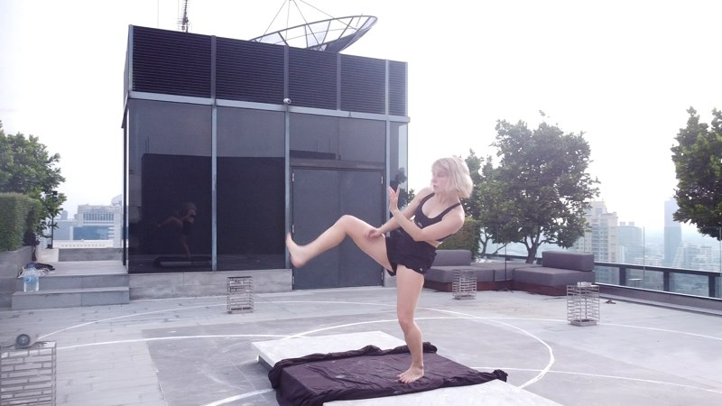
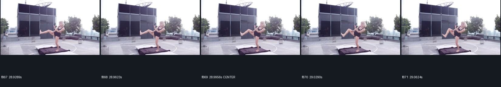
这张源帧是否值得用于子弹时刻？
封面为两组实际Stage2末帧；播放后依次看完整绕拍和Stage3恢复动作。
主合并视频仅为分享转成30fps；分阶段Stage3仍逐源帧保留，不补造更长动作。
绕拍构图：恢复动作时关键部位可见性：
“候选”不是最终合格帧。没有人工最优动作区间时，不硬把接口异常归为漏动作、错段、坏帧或误拒。
| 原片 | 保留候选源帧 | 结果 | 已定位的问题 |
|---|---|---|---|
| 旧例：屋顶女舞 | f285 / f420 | 未交付 | 加密回答缺字段；后续规划文字拼接失效 |
| 旧例：白衬衣绿植半身D | f327 | 未交付 | 邻帧帧号写成字符串，无法交付 |
| 新片1：双人舞 | f83 / f306 | 全部拒绝，待确认 | 眼部可见性描述与原图不符；最终全拒待确认 |
| 新片2：秋景人物动作 | f164 | 未交付 | 局部回答缺字段；另有朝向描述错误 |
| 新片3：低机位滑板 | f17 | 未交付 | 局部回答重复字段；后续规划文字拼接失效 |
候选动作段：旋转动作 f210–285（7.007–9.51s）；地面动作 f360–435（12.012–14.514s）；单腿站立与踢腿 f869–944（28.996–31.498s）
最终：未交付；两个保留候选均在最终规划的逐字拼接检查失败；已有中间参数但最终协议未通过，非正式交付。
第一处可定位问题：第三候选加密回答建议f919，但缺少顶层evidence字段，原样拒收；有效候选只剩f285、f420。随后先选f420、再尝试f285，两次均因重复摘要的标点未逐字复制而未交付。
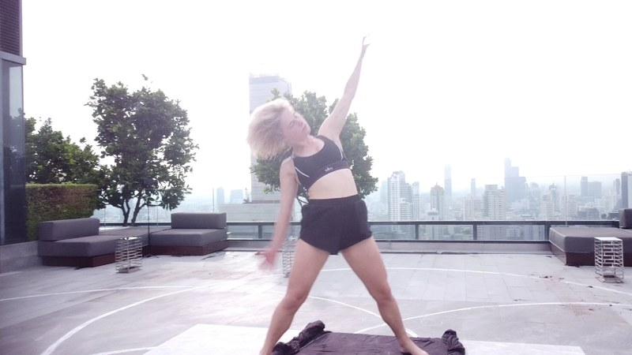
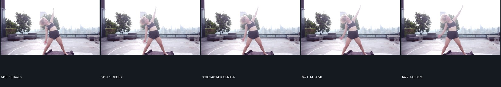
没有人工认可的最优帧或动作区间；无法据旧集成参考帧断言漏掉真正最优高光，也不将f420/f285判为人工合格。源证据部分JSON不可读，缺失回答从原始token恢复并复现冻结验证错误。
该候选可用性：你认为最早问题：
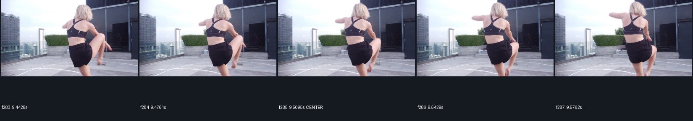
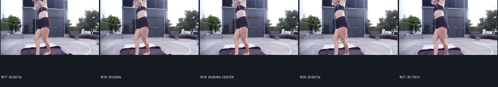
候选动作段：双手竖起大拇指的手势 f314–339（12.56–13.56s）
最终：未交付；邻帧回答把整数帧号输出成字符串；未形成可交付绕拍计划。
第一处可定位问题：粗定位覆盖末尾双拇指动作，局部f330、加密f327，单候选资格通过。邻帧回答把selected_frame、equivalent_frames和neighbor_checks的帧号写成source_frame=327等字符串，接口要求整数；没有证据表明它选到了不存在的帧。
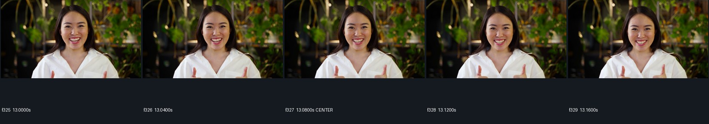
f327与f330哪个更漂亮仍有主观性；用户未单独验收这批VLM选帧。半身构图本身不构成不合格，不以缺全身为理由拒绝。
该候选可用性：你认为最早问题：
候选动作段：女方起身并转身，男方在后方辅助 f60–135（2.002–4.505s）；男方转身面向女方，女方伸手抓住男方手臂 f150–225（5.005–7.508s）；男方下蹲，双手握住女方抬起的手臂 f240–308（8.008–10.277s）
最终：原生排序未支持任何候选，未强制选帧；拒绝是否正确尚无人工真值；未形成可交付绕拍计划。
第一处可定位问题：正确定位到旋转动作，却把f83选择理由写成女方眼神清晰、直视男方、面部表情清楚。原始f83与邻帧主要是背/侧后视角，眼睛被朝向和头发遮住，不能支持该选择理由。这是同动作内帧证据失真，不是已证明所有背向舞蹈都不合格。
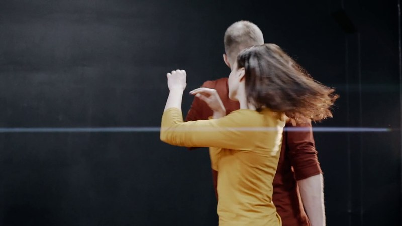
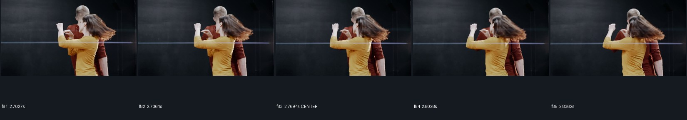
原生全拒可能包含合理拒绝；没有人工合格帧，不能把f75自动当正例，也不能据此确定是事件排序误拒。f306若以男方手部为唯一目标仍需任务偏好判断。
该候选可用性：你认为最早问题：
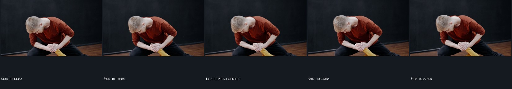
候选动作段：第一次转身跳跃 f25–87（1.0–3.48s）；第二次转身跳跃 f75–137（3.0–5.48s）；第三次跳跃 f150–196（6.0–7.84s）
最终：未交付；保留f164后，邻帧回答出现重复JSON键；未形成可交付绕拍计划。
第一处可定位问题：第一、第二候选的局部回答缺顶层evidence；第三候选得到f164并通过单候选资格。随后邻帧回答因重复JSON键失效。更早的高光是否被漏掉，没有人工区间真值，不能直接断言。
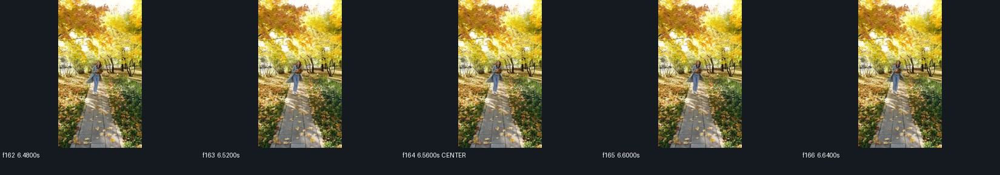
先前4fps概览不足以确定每次是否双脚离地，故不把模型所有跳跃命名直接判成幻觉。该新片没有用户认可高光或明确拒绝标签；无法确定最优区间或误拒。
该候选可用性：你认为最早问题：
候选动作段：滑板启动与加速 f0–60（0.0–2.502s）；大幅度滑行姿态 f48–108（2.002–4.504s）；滑板经过镜头 f120–180（5.005–7.507s）
最终：未交付；f17经过邻帧核实后，最终规划分隔符未逐字复制；已有中间参数但最终协议未通过，非正式交付。
第一处可定位问题：第一候选产生f17；第二候选局部回答重复JSON键，第三候选又违反选帧与等价集合一致性。f17随后通过单候选与邻帧核实，最后摘要用了英文分号和空格，未满足逐字中文分号拼接约束。
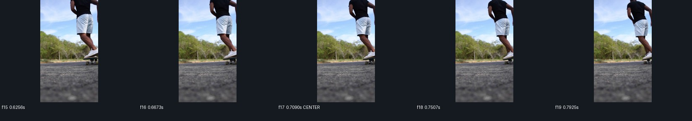
没有确认的腾空招式或人工认可高光；不把正常无高光拒绝当漏检，也不把f17自动判合格。全片是否值得做子弹时刻需要任务偏好监督。
该候选可用性：你认为最早问题：
本页只收集人工复核，不自动将答案变训练标签。源图是原片真实帧，展示视频压缩；原生输出、实际末端视角、随机侧别映射和完整调用审计保留在项目内。